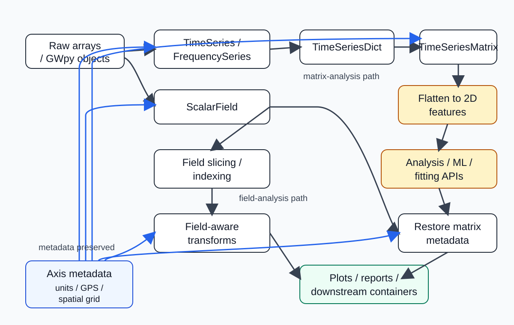

アーキテクチャとデータフロー
ページ種別: 設計ガイド
gwexpy の設計思想と、内部的なデータ処理の流れについて解説します。
本パッケージは GWpy を拡張し、多チャネルの TimeSeriesMatrix 操作や 4次元の物理的な場を表すフィールドを扱いやすくすることを目指しています。
検索のヒント: architecture, data flow, TimeSeriesMatrix, ScalarField, flattening, フィールド API
このページでわかること
以下の要約表は共有 CSS の表スタイルに合わせています。小さい画面では、表を個別調整するより横スクロールで読む前提です。
項目 |
内容 |
|---|---|
ページ種別 |
設計ガイド |
対象読者 |
コンテナ設計の考え方を知りたい利用者、内部データフローを把握したいコントリビュータ |
前提 |
|
こんなときに読む |
Matrix 系やフィールド API がなぜこの形なのか知りたい、理論ページや API ページへ進む前に地図が欲しい |
検索キーワード |
architecture, data flow, |
このページの近道
このページの読み方
データ構造の設計思想
データフロー図
主要な解析コンポーネントの概念
関連ドキュメント
このページの読み方
gwexpyの内部表現や変換の考え方を掴みたい場合は、このページを先に読んでください。具体的なアルゴリズムの理論は 物理モデルと解析理論 を参照してください。
実装 API を確認したい場合は、各節末尾の API リンクから matrix API, fields API, fitting API へ進んでください。
データ構造の設計思想
1. 行列オブジェクトの平坦化フロー
目的: 行列系コンテナが解析向けにどのように整形され、メタデータをどう保つかを示す。
入力: TimeSeriesMatrix や FrequencySeriesMatrix のような多チャネル・行列型データ。
出力: 計算に使いやすい 2 次元表現と、復元後も保たれるメタデータ。
TimeSeriesMatrix や FrequencySeriesMatrix は、内部で scikit-learn 等の機械学習ライブラリと親和性の高い形式への変換を自動で行います。
通常、(チャネル数, 時間/周波数数, 行列の列数) のような 3 次元データを、メタデータを保持したまま一時的に 2 次元へ平坦化し、計算後に元の次元と GPS タイムスタンプを復元します。これにより、物理情報を失わずに高度なアルゴリズムを適用できます。
API 入口: matrix API, timeseries API
2. 4次元フィールド（フィールド API）モデル
目的: フィールド系コンテナがスライス後も軸情報を保つ理由を示す。
入力: 時間・周波数・空間軸を持つ ScalarField。
出力: 選択操作の後もグリッド情報と軸メタデータが揃ったフィールド。
ScalarField は (Time, Frequency, x, y) の 4次元構造を基本単位とします。
インデクシング操作において次元を削減しない（4次元を維持する）ことで、グリッド情報とデータの整合性を常に担保しています。
API 入口: fields API, スライス操作ガイド
データフロー図
以下の静的図は、現在の docs ビルド環境でも確実に表示できる形で、GWexpy の主要コンテナが生データから解析 API に渡るまでの流れと、軸メタデータがどこで保たれるかをまとめたものです。
{kind=link}

生配列や GWpy オブジェクトから、行列解析経路とフィールド解析経路を通って下流の出力へ進むまでの流れと、軸メタデータ保持の位置をまとめた図。
読み方の要点:
TimeSeriesDict -> TimeSeriesMatrix -> 2次元特徴量へ平坦化は、scikit-learn 系の 2 次元入力へ接続するための行列解析経路です。ScalarField -> フィールドのスライス / インデクシング -> フィールド対応変換は、時間・周波数・空間軸を揃えたまま扱うフィールド解析経路です。どちらの経路でもメタデータを保持するため、結果を単なる配列インデックスではなく物理座標に対応づけて解釈できます。
主要な解析コンポーネントの概念
gwexpy は、以下の主要コンポーネントを組み合わせて高度な解析パイプラインを構築します。個別のアルゴリズム詳細は 物理モデルと解析理論 を参照してください。
多チャネル解析エンジン: 環境ノイズ分離のための ICA/PCA 実装。
高速相関計算基盤: 大規模観測データに対する高速コヒーレンス計算（BruCo）。
統計的推定・フィッティング: GLS や MCMC を用いた物理パラメータ推定。
次に読む
物理モデルと解析理論 — ICA/BruCo/MCMC などの解析理論・物理モデル詳細
検証済みアルゴリズム — 各数値アルゴリズムの信頼性検証
前提条件と規約 — FFT・GPS 時刻・GWpy 互換の前提を整理する